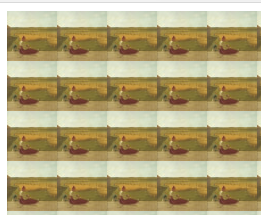
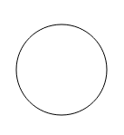
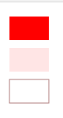

Canvas
How to use Canvas
-
Create the canvas element
-
In JS, get your canvas element by using the id
const canvas = document.getElementById('myCanvas'); -
Use the canvas element to get the context
const ctx = canvas.getContext('2d'); - Use the context to draw
Fallback content
canvas.getContext(contextType, contextAttributes)
- "2d"
- "webgl" (or "experimental-webgl")
- "webgl2"
- "bitmaprenderer"
canvas.getContext(contextType, contextAttributes)
See all of then in page
https://developer.mozilla.org/en-US/docs/Web/API/HTMLCanvasElement/getContext
Coordinate space

Rectangles
fillRect(x, y, width, height)
Draws a filled rectangle
strokeRect(x, y, width, height)
Draws a rectangular outline
clearRect(x, y, width, height)
Clears the specified rectangular area, making it fully transparent
Images
drawImage(image, x, y)
const image = document.getElementById('source');
image.addEventListener('load', e => {
ctx.drawImage(image, 33, 71, 104, 124, 21, 20, 87, 104);
});Patterns
createPattern(image, type)
image - CanvasImageSource,
type - how to use the image (repeat, repeat-x, repeat-y, no-repeat)

Path
A path is a list of points, lines and shapes of different width and of different color are connected and form a shape.
How to use path
-
Create the path
beginPath()
-
use drawing commands to draw into the path
moveTo(), lineTo(), arc(), arcTo(), rect() and etc
-
stroke or fill the path
stroke() - draws the shape by stroking its outlinefill() - draws a solid shape by filling the path's content area
- * closePath() - adds a straight line to the path, going to the start of the current sub-path
moveTo(x, y)
Moves the pen to the coordinates specified by x and y
lineTo(x, y)
Draws a line from the current drawing position to the position specified by x and y
rect(x, y, width, height)
Draws a rectangle whose top-left corner is specified by (x, y)
with the specified width and height
Arcs
arc(x, y, radius, startAngle, endAngle, anticlockwise)
Draws an arc
arcTo(x1, y1, x2, y2, radius)
Draws an arc, connected to the previous point by a straight line

radians = (Math.PI/180)*degreesText
fillText(text, x, y [, maxWidth])
Fills a given text at the given (x,y) position
strokeText(text, x, y [, maxWidth])
Strokes a given text at the given (x,y) position
Text properties
- font = value
-
textAlign = value
value: start(default), end, left, right or center
-
textBaseline = value
value: top, hanging, middle, alphabetic(default), ideographic, bottom
-
direction = value
value:ltr, rtl, inherit(default)
ctx.font = '50px serif';
ctx.fillText('Hello world', 50, 90);Properties: Color
fillStyle = color
strokeStyle = color
globalAlpha = transparencyValue

//create fill rect with opacity=0.5
ctx.fillStyle = 'rgb(255,0,0)';
ctx.globalAlpha = 0.1;
ctx.fillRect(10, 50, 50, 30);
//create stroke rect with stroke opacity=0.5
ctx.strokeStyle = 'rgba(100, 0, 0, 0.5)';
ctx.strokeRect(10, 90, 50, 30)
Gradients
createLinearGradient(x1, y1, x2, y2)
createRadialGradient(x1, y1, r1, x2, y2, r2)
gradient.addColorStop(position, color)

// Create gradient
var grd = ctx.createLinearGradient(0, 0, 200, 0);
grd.addColorStop(0, "red");
grd.addColorStop(1, "white");
// Fill with gradient
ctx.fillStyle = grd;
ctx.fillRect(10, 10, 150, 80);
Transformations
translate(x, y)
rotate(angle)
scale(x, y)
transform(a, b, c, d, e, f)
Animation
- Clear the canvas
- Save the canvas state. Use save()
- Draw animated shapes
- Restore the canvas state. Use restore()